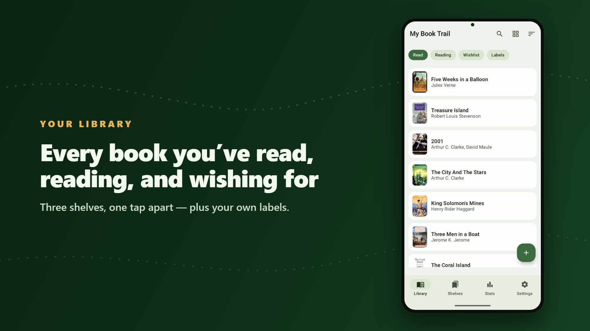
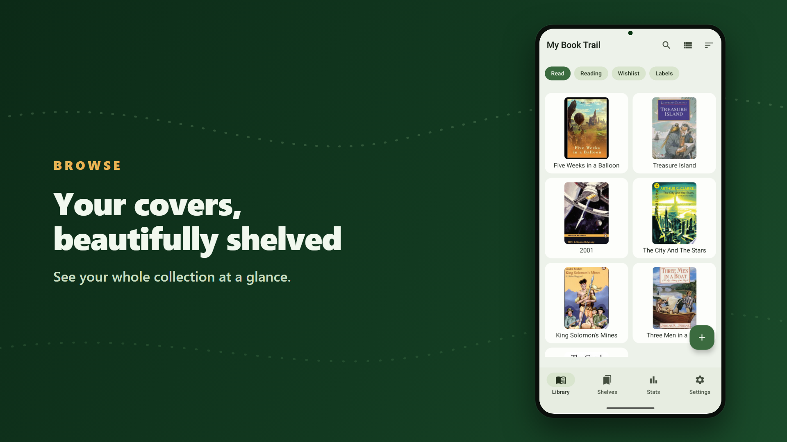
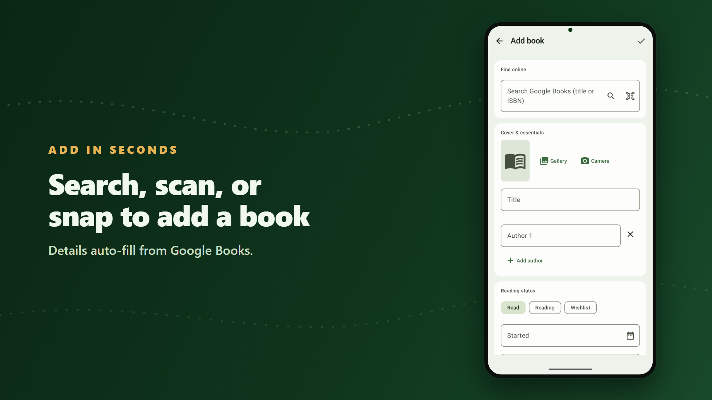
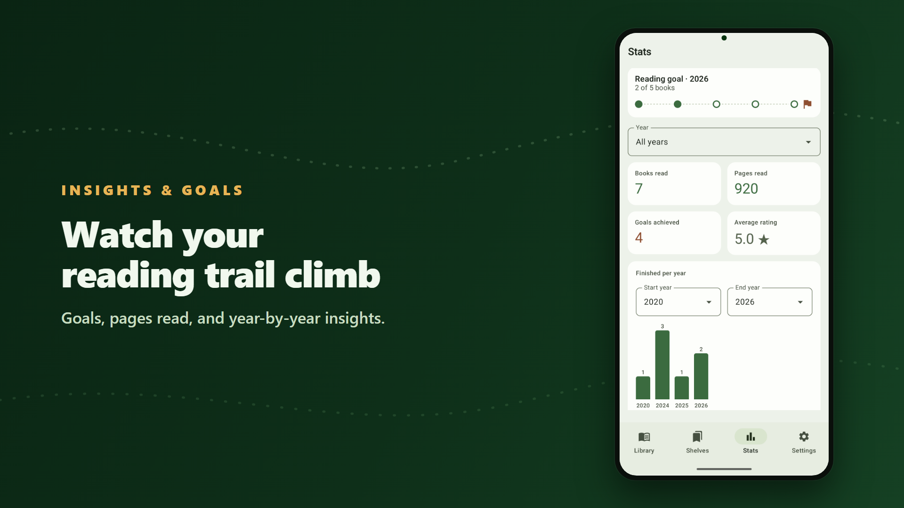
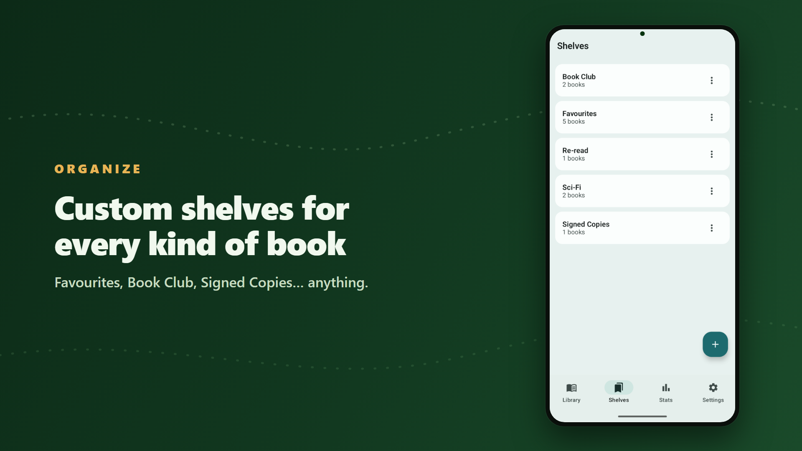
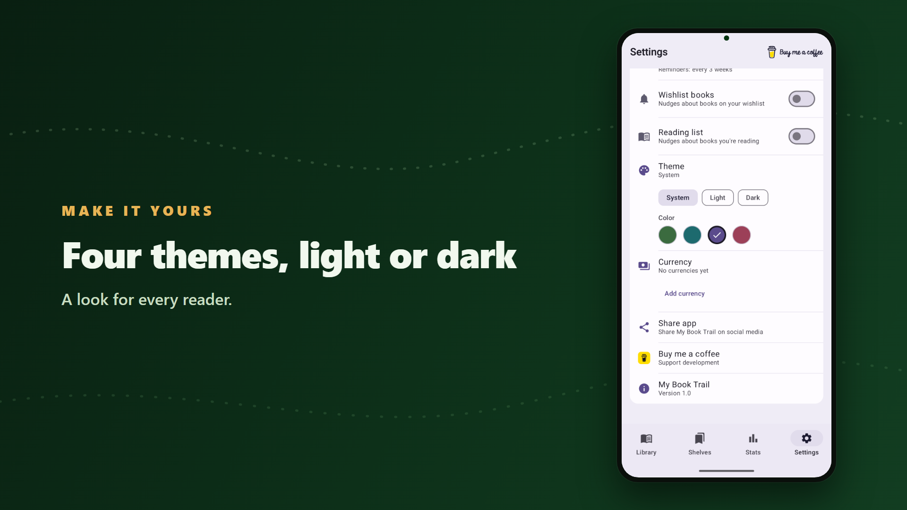

What is My Book Trail?
My Book Trail is a personal reading tracker for Android. It gives readers a private, beautifully organised place to catalogue every book they've read, are currently reading, or want to read next — with covers, star ratings, notes, custom shelves, reading statistics, and yearly reading goals. You can add books in seconds by searching Google Books, scanning a barcode, or snapping the cover with your camera. Your library is stored on your own device and, if you choose, privately backed up to your own Google Drive account.
Take a look inside
A private, beautifully organised home for everything you read.






Privacy & data
My Book Trail does not collect or store your personal data on any server operated by the developer. Your library stays on your device and, only if you enable sync, in your own Google Drive (in a private app folder). The app shows ads via Google AdMob and Meta Audience Network, which may collect device identifiers for advertising. Read the full policy for details.